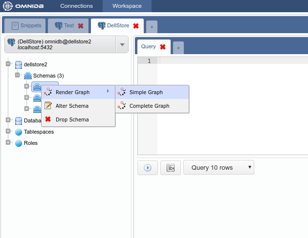
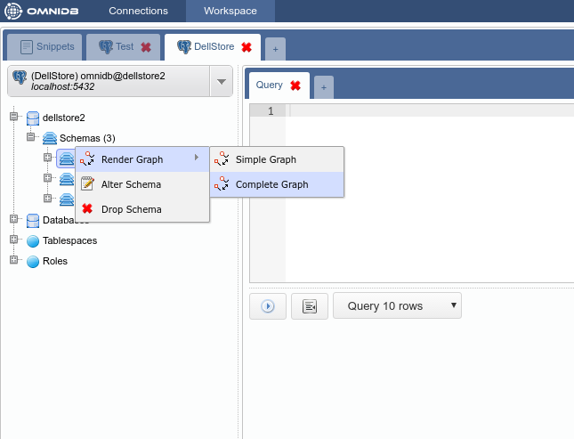
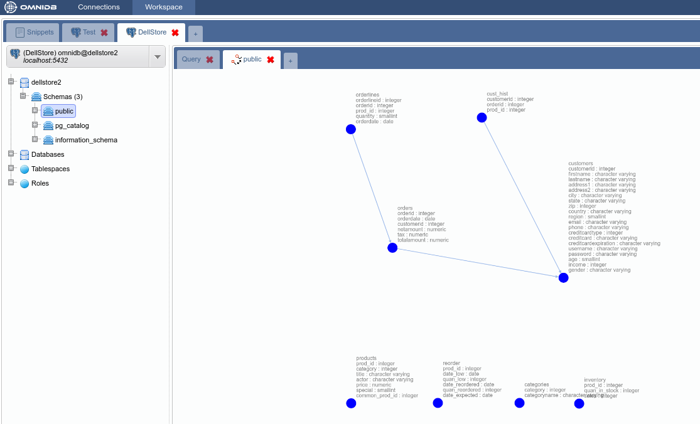

This feature displays a graph with nodes representing tables and edges representing table relationships with foreign keys. Using the mouse, the user is able to zoom in, zoom out, and drag and drop nodes to change its position.
There are two types of graphs: Simple Graph and Complete Graph.
To access it just right click the root node of the tree and then select the action Render Graph > Simple Graph:

This graph displays tables with all its columns and respective data types. Additionally, edges now are labeled with information about the specific foreign key. To access it just right click the root node of the tree and then select the action Render Graph > Complete Graph:

